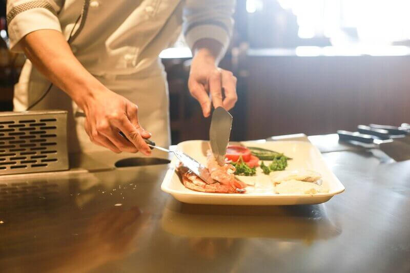

"Sabor Chileno" restaurante brings the greatest taste of Chile to the beautiful Regina, Saskatchewan, Canada. Decorated in a familiar, warm and friendly way. The attention is in charge of friendly and smiling Chileans. The menu is composed of typical Chilean food. Breakfast, lunch and dinner are served. There are Chilean music in the background, in a pleasant and soft tone. Come and enjoy a delicious "empanada chilena", "pastel de choclo" or a typical "cazuela chilena". That and much more is exactly what you can taste in our restaurant. We invite you to learn more about us on our website, see you soon.
1st quality Chilean Food
"Sabor Chileno" restaurante is a place where you can enjoy the best and most
traditional Chilean cuisine with the quality and hospitality that characterizes us.
We serve every day of the year preparing the most delicious and traditional dishes
of Chilean food. Come to know our great quality, it is not necessary to have
previous reservation.
Read more...
Our customers' opinion
"Sabor Chileno" restaurante is a great place, the food is very taste,
the attention is fast and friendly
I recommend it 100%
Read more...
I loved the restaurant, the food is exquisite,
very good service, I recommend the vetoed chop,
sure we will return.
Read more...